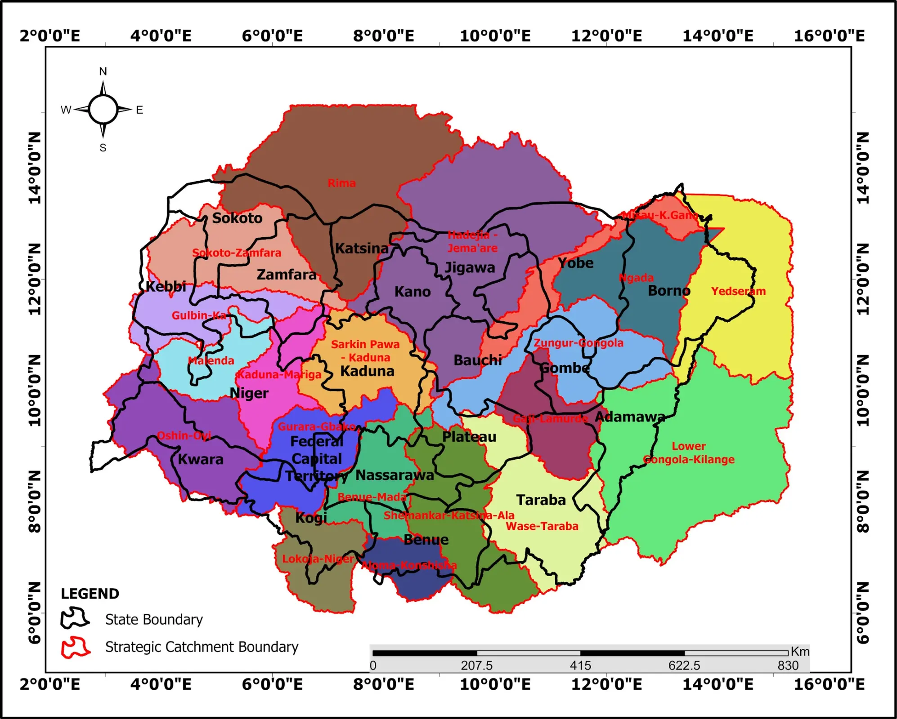
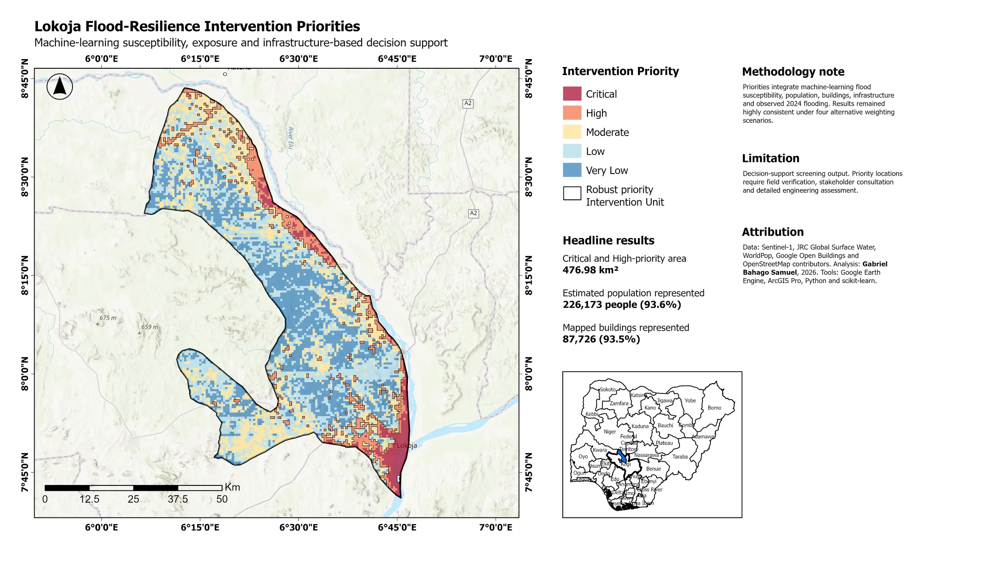

National programme · 2024–2026
20 Strategic Catchment Management Plans
Watershed delineation, baseline studies, stakeholder evidence and standardized GIS outputs across Northern Nigeria.
Read the case study →GIS · Remote sensing · Hydrology
I turn satellite imagery, maps and field evidence into practical insights for flood resilience, water resources and environmental planning.
My work spans strategic catchment planning, flood resilience, dam and irrigation studies, land-cover analysis and environmental assessment across Nigeria.
Featured work
A selection of professional and independent work across environmental planning, water resources and climate resilience.

Watershed delineation, baseline studies, stakeholder evidence and standardized GIS outputs across Northern Nigeria.
Read the case study →
Explore where Lokoja is flood-prone and which locations could benefit from closer resilience planning.
Open the dashboard ↗Interactive environmental research
Three recent studies show where further environmental investigation or planning could be useful. Each atlas explains what was studied, what the evidence found and what remains uncertain.
How I work
I combine satellite imagery, terrain models, field evidence and stakeholder knowledge to build defensible spatial products.
My goal is not simply to produce maps, but to explain patterns, support planning and make technical evidence accessible.
Start a conversation
I am open to GIS, remote-sensing, water-resources and environmental-planning opportunities.